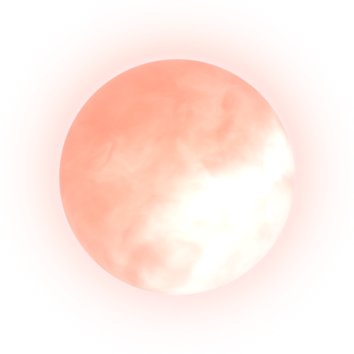
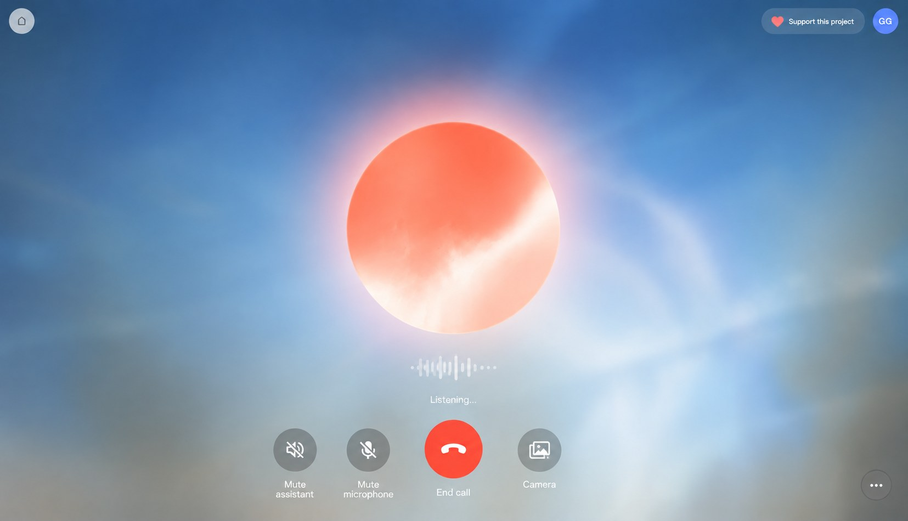
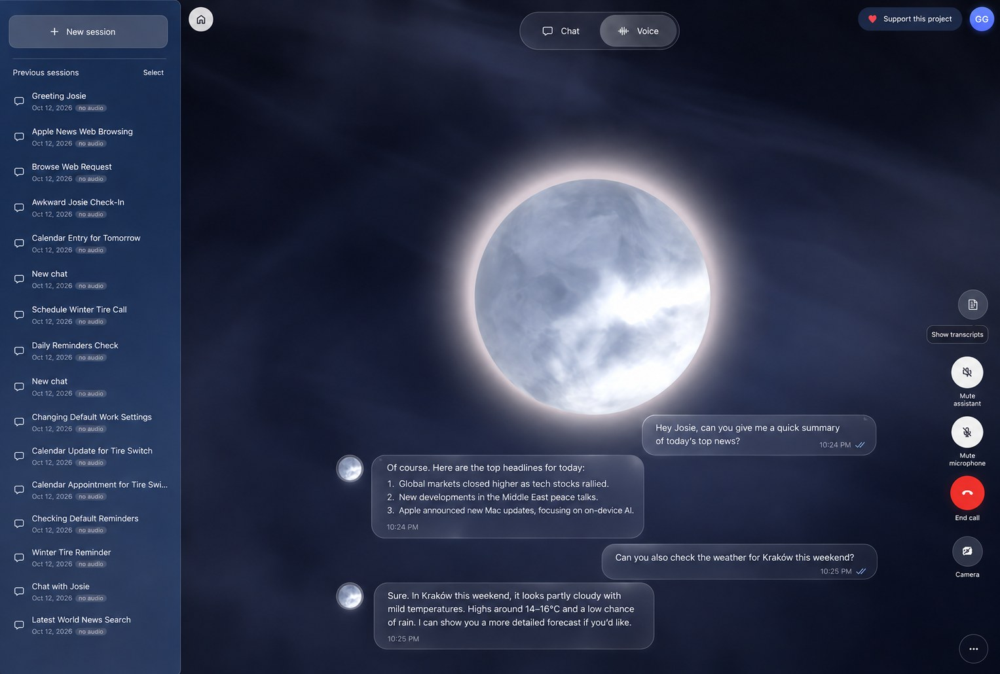
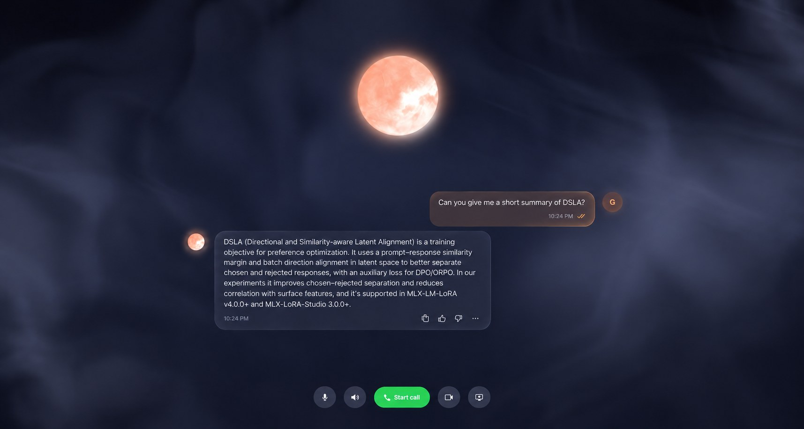
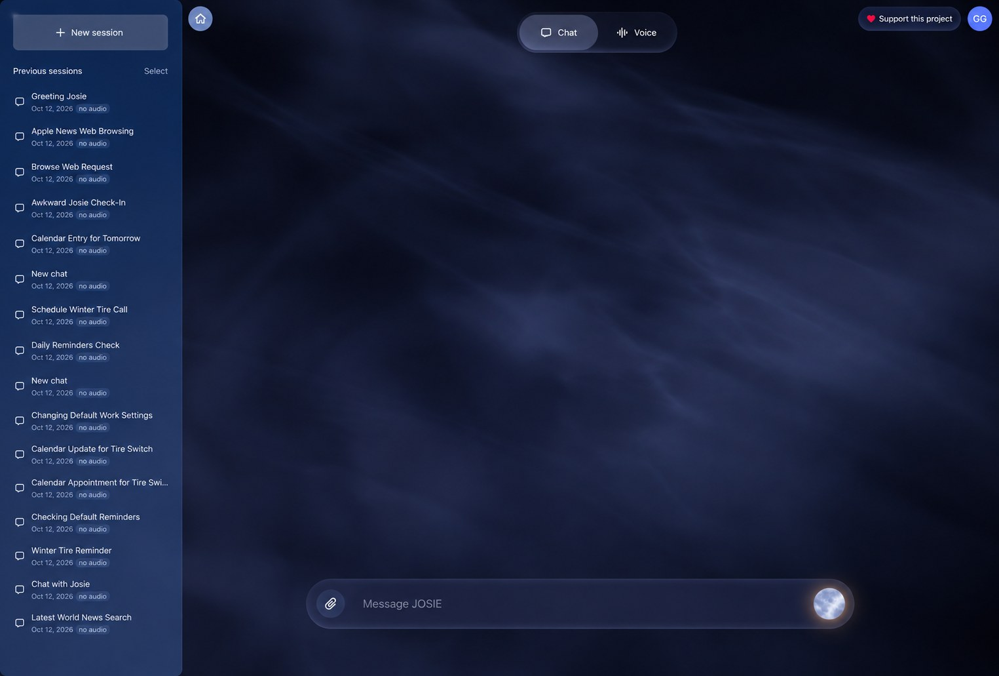

Real conversation
Knows when you've finished talking. Interrupt her just by speaking.

JOSIE-Voice DownloadBy Gökdeniz Gülmez · Free for Mac
JOSIE-Voice is a voice and chat assistant that listens, knows who's speaking, and talks back with a natural voice. Hearing, voice recognition and speech all run on your Mac, so your voice never leaves it.
JOSIE-Voice is a Mac app. Open this page on your Mac to download.
01 · Two ways to use it
Switch between Voice and Chat with one tap. It's the same conversation either way: start a call, hang up, keep typing, and JOSIE remembers it all.




Clips recorded from JOSIE's web interface, which shares the Mac app's look.
02 · Features
Knows when you've finished talking. Interrupt her just by speaking.
Learns you from three short phrases and tells people apart.
Pick a preset, clone a voice from a short recording, or describe a new one in words.
Hearing, voice recognition and speech run on your Mac. Your data stays on your Mac. No account.
Optional Reminders, Calendar, Maps and Messages drafts (you tap Send). Each is off until you turn it on.
Turn on the camera and ask about what it sees. Needs an image-capable model.
Volume follows background noise, with echo cancellation.
The background follows the real time of day, under Apple's Liquid Glass design.
03 · No tech skills needed
You won't type a single command. Setup takes about 15 minutes, mostly waiting for downloads.
01
Click Download for Mac. You get a file like JOSIE-Voice-0.1.0-mac-test11-macOS-arm64.dmg in your Downloads folder.
02
Double-click the .dmg file. Drag the JOSIE-Voice icon onto the Applications folder and close the window. Then eject the JOSIE-Voice disk in Finder's sidebar.
03
Ollama is a free app. Go to ollama.com/download, download it for macOS, drag it to Applications and open it once. A llama icon in the menu bar means it's running.
JOSIE downloads her brain into it in step 5.
04
Double-click it in Applications.
05
That's it. Click the orb and say hi.
04 · Good to know
After setup, everything works offline except the language model, which runs in Ollama on your Mac.
In Settings, switch to any OpenAI-compatible service with your own key, or to Apple Intelligence on macOS 26.
Settings → Setup → Run setup again.
Turn them on one by one in Settings → Apple tools. macOS asks permission the first time each is used.
They download only if you want them: voice design (3.1 GB) and word timestamps (1.3 GB).
05 · FAQ
Yes.
No. Hearing, voice recognition and speech run on your Mac, and by default the language model (Ollama) does too. If you switch to an online model, your text goes to that service.
No.
No, Apple Silicon (M1 or later) only.
Not as a download yet.
Open Ollama from Applications, then click Recheck in JOSIE's setup.
Open System Settings → Privacy & Security → Microphone and turn on JOSIE-Voice.
About 5 GB of voice models plus about 1 GB for the language model, at the default small sizes.
Drag JOSIE-Voice to the Trash. To remove its data and models too, delete the JOSIE-Voice folder in ~/Library/Application Support.
06 · The JOSIE family
JOSIE-Voice comes from the JOSIE family of personality-driven language models by Gökdeniz Gülmez, trained entirely on Apple Silicon.